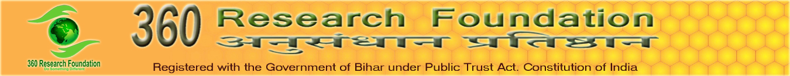
Welcome to our website
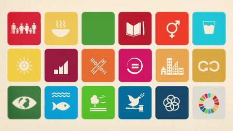
360RF helps research, innovation and creative minds in the field if empowerment and livelihood.
The 360 Research Foundation (360RF) is a National level initiative to promote and facilitate the grassroots researches and technological innovations with collaborative and interdisciplinary research and enhancement of research networking capacity and infrastructure. Its mission is to help researchers, innovators and creative minds in the field if empowerment and livelihood. 360 RF scouts, supports, educates, provides training in research and related skills and spawns’ researches and innovations developed by individuals, local team and communities in any field, helping in human survival and scientific research. 360 has proved that grassroots innovators can match anyone in the world when it comes to solving problems creatively. They perform better than others in generating greater sustainable alternatives by using local resources frugally. Those who see poor only as the consumers of cheap goods, miss the richness of knowledge at grassroots level and their potential as provider of ideas and innovations.
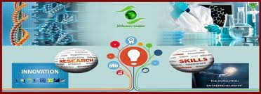
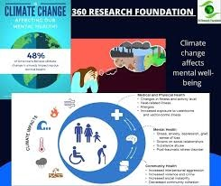
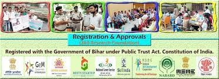
Agriculture department
Agricultural can be broadly defined as any research activity aimed at improving productivity and quality of crops by their genetic improvement, better plant protection, irrigation, storage methods, farm mechanization, efficient marketing, and a better management of resources.The Department of Agriculture (DA) at 360 Research Foundation works to develop plans and policies for the development of agriculture, animal husbandry, dairy, fisheries, agricultural land policies and food processing for famers’ welfare. It works in close coordination with the agriculture departments of national and state partners as well as regional.
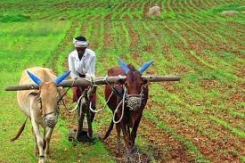
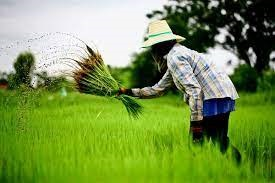
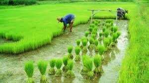
OUR ACTIVITIES
Internship
Students from IITs, NITs and top National Universities are doing Internship in different fields.
Campus Activity
We conduct campus activities like science exhibitions, motivational programmes, quiz in different schools, and other institutions to support personality development.
Internship Offer
Get Internship & Training opportunity at one of the fastest growing organisation in India.
Health Camp
Currently 15 to 20 health workers in each village Teams are reaching and checking the health of people above 40 years of age. In this test, Blood Pressure, Pulse Rate, Oxygen Label, Heart Beat, Body Temperature, Weight, Height etc. are being tested for free.
Grassroots Innovations
Beyond the boundaries of formal institutions, a large number of individuals in the informal sector have been engaged in innovative technological pursuits of their own. 360 R.F. has been earnestly scouting and documenting such technological ideas and innovations of the people at the grassroots and school students from all parts of the India.
I-CAN News
I-CAN (India Co-Win Action Network) is an initiative by Atal Incubation Centre- Rambhau Mhalgi Prabodhini (AIC-RMP) in collaboration with Connecting Dreams Foundation (CDF) to help underprivileged communities that have been hardest hit due COVID-19.
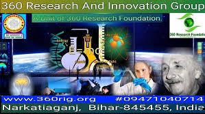
.jpg)
.jpg) 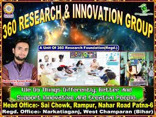
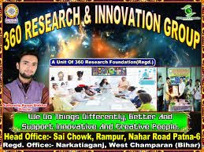
RESEARCH & INNOVATION
Engaging in research, innovation, and development is the hallmark of a great research Institution. Through participation in research and creative endeavors, individuals become better thinkers, innovators, and problem solvers, cultivating a depth of understanding needed to make a positive difference in the world.Research and Development plays a critical role in the innovation process. It's essentially an investment in technology and future capabilities which is transformed into new products, processes, and services.
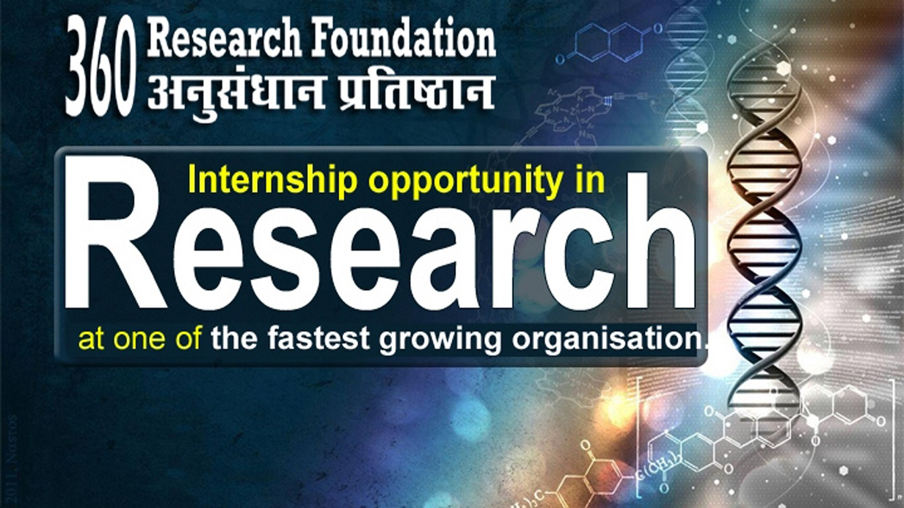
Fist Aid:
The First Aid (FA) is an initiative of 360 Research Foundation for the purpose of providing primary healthcare consultation and First Aid services at village/ward level.The First Aid functions as the primary health center and offers outpatient consultation services with a small pharmacy with general medicines prescribed by the doctor. Apart from this, the First Aid conducts regular health talks and consultation by various specialists with the help of 360 Research Foundation.
360 RIG:
360 Research and Innovation Group (360RIG), is the constituent unit of 360 Research Foundation, working in the field of Scientific Research and Innovation.360RIG helps innovators and outstanding traditional knowledge holders get due recognition, respect and reward for their innovations. These socially-relevant solutions help us, our communities and our nation.

The Life Savers:
The Life Savers (TLS)is an initiative supported by 360 Research Foundation to save the lives by donating blood directly to the needy people.The Life Savers donates blood not to store/ sell; all have a plan to help needy people who cannot buy the blood from other sources. The Life savers is a group of people ready to donate blood, generally we have members from all blood groups.
Master English Classes(MEC):
Master English Classes (MEC) is the constituent unit of 360 Research Foundation. This is a charitable organization working with an aim to bring solace to the needy. MEC works for the betterment of women and children. Free coaching classes provided by us have helped students to gain confidence in facing exams and society.
Gurkul Coaching center:
Gurukul Coaching Center is an innovative initiative of 360 Research Foundation to educate those children who have left behind in this very competitive era. India has the second largest education in the world. The scale of operation involved to ensure the quality of Education for India is challenging because in a rural part of India teacher have to face many difficulties to teach. This is why Gurukul Coaching Center was established to promote rural education.
Departments
Engaging in research, innovation, and development is the hallmark